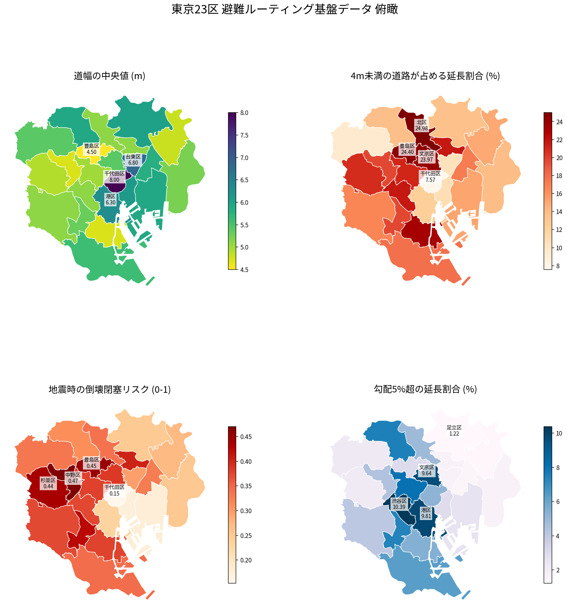

国土地理院「基盤地図情報」から生成。694,712エッジ / 総延長19,586km。 区名をクリックすると道路網の対話地図が開きます（道幅・倒壊閉塞リスク・勾配を切替）。

倒壊閉塞リスクの高い順。いずれも延長で重み付けした値です。
| 区 | 総延長 km | 道幅中央値 m | 4m未満 % | 閉塞リスク | 勾配5%超 % | 標高中央値 m |
|---|---|---|---|---|---|---|
| 中野区▦ | 557 | 4.7 | 19.7 | 0.47 | 4.3 | 36.6 |
| 豊島区▦ | 456 | 4.5 | 24.4 | 0.45 | 3.0 | 30.2 |
| 杉並区▦ | 1,228 | 4.9 | 20.8 | 0.44 | 2.1 | 43.8 |
| 目黒区▦ | 490 | 5.3 | 19.6 | 0.42 | 7.4 | 28.0 |
| 荒川区▦ | 360 | 5.1 | 21.7 | 0.40 | 1.6 | 2.0 |
| 文京区▦ | 350 | 5.4 | 24.0 | 0.38 | 9.6 | 20.3 |
| 新宿区▦ | 565 | 5.0 | 21.1 | 0.38 | 8.1 | 28.8 |
| 品川区▦ | 651 | 4.7 | 23.3 | 0.38 | 5.4 | 12.6 |
| 渋谷区▦ | 462 | 5.1 | 21.7 | 0.37 | 10.4 | 32.1 |
| 世田谷区▦ | 1,995 | 5.1 | 16.7 | 0.37 | 4.1 | 37.4 |
| 大田区▦ | 1,482 | 5.6 | 17.9 | 0.34 | 6.3 | 4.2 |
| 北区▦ | 673 | 5.1 | 25.0 | 0.34 | 4.9 | 5.6 |
| 練馬区▦ | 1,632 | 5.4 | 9.4 | 0.33 | 2.2 | 40.9 |
| 墨田区▦ | 480 | 5.8 | 17.2 | 0.33 | 1.5 | -0.1 |
| 板橋区▦ | 1,073 | 5.9 | 13.7 | 0.31 | 7.5 | 22.3 |
| 台東区▦ | 380 | 6.8 | 10.4 | 0.30 | 1.6 | 2.3 |
| 葛飾区▦ | 1,198 | 4.8 | 14.9 | 0.27 | 1.3 | 0.8 |
| 江戸川区▦ | 1,610 | 5.2 | 13.9 | 0.25 | 1.7 | 0.7 |
| 足立区▦ | 1,794 | 6.0 | 13.5 | 0.25 | 1.2 | 1.7 |
| 港区▦ | 513 | 6.3 | 12.4 | 0.23 | 9.8 | 9.9 |
| 江東区▦ | 1,036 | 5.9 | 15.2 | 0.18 | 2.6 | 1.7 |
| 中央区▦ | 310 | 6.1 | 10.7 | 0.17 | 2.9 | 2.6 |
| 千代田区▦ | 291 | 8.0 | 7.6 | 0.15 | 5.2 | 5.1 |
reports/qc.md を参照してください。
{kind=link}
{kind=link}
{kind=link}
{kind=link}
{kind=link}
{kind=link}
{kind=link}
{kind=link}
{kind=link}
{kind=link}
{kind=link}
{kind=link}
{kind=link}
{kind=link}
{kind=link}
{kind=link}
{kind=link}
{kind=link}
{kind=link}
{kind=link}
{kind=link}
{kind=link}
{kind=link}